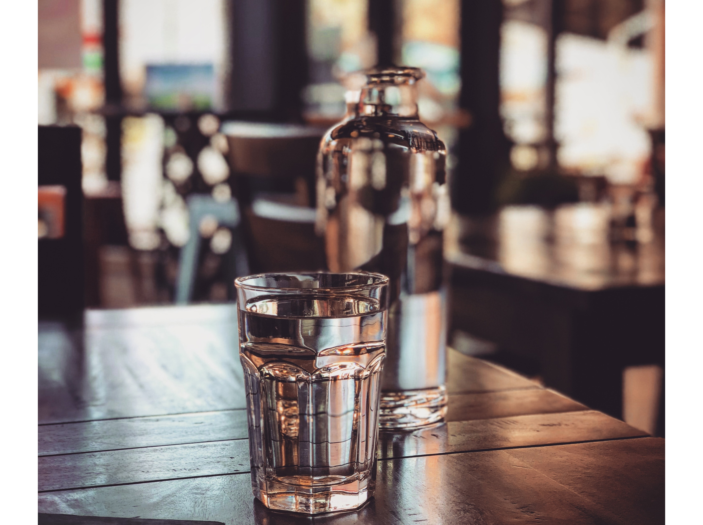

[물 건강법] 매일 마시는 물... 하찮게 생각하지 마세요! 음양탕 알려 드릴께요.

- 아침에 몸을 깨우는 물
- 음양탕을 마셔야 하는 이유
- 잘못된 물에 대한 건강상식
음양탕을 마셔야 하는 이유
위장의 연동온도는 물의 온도가 65도 정도 됐을때 최고치에 이르고 찬물-물의 온도가 15도 정도로 떨어지기 시작하면 연동성이 굉장히 떨어지면서 소화가 안된다고 합니다.그래서 물만 먹어도 체한다는 말이 여기서 나온건데요.
그래서 음양탕은 물의 온도에 있어서도 굉장히 흡수에 유리한 물이라고 할수 있습니다.